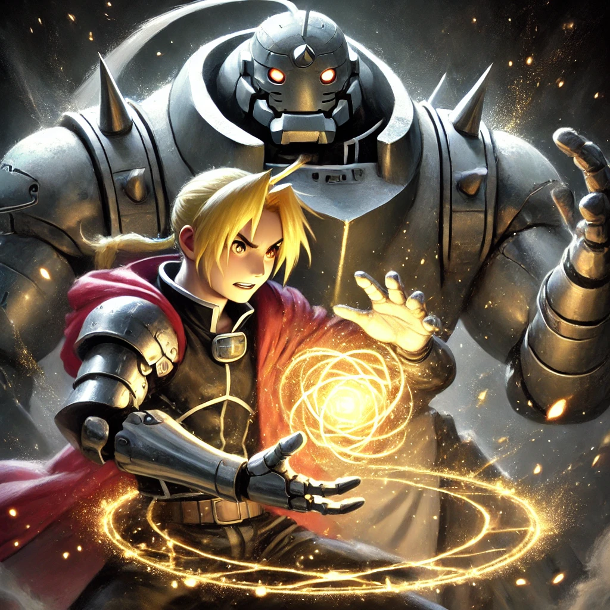

강철의 연금술사
목차
작가
아라카와 히로무
출판일
2021년 8월~2010년 7월
감상평에 대한 AI 그림
등가교환이라는 법칙 속에서 에드와 알이 겪는 고난은 단순한 모험을 넘어선다. 인간의 욕망, 희생, 가족애를 모두 담아낸 이 작품은 단순한 소년 만화를 넘어 철학적 깊이를 지닌다.

감상평에 대한 AI 평가
깊이: 작품의 철학적 메시지를 잘 파악했음 (9.5/10)
✨ 문장력: 간결하면서도 강렬한 문장이 돋보임
✨ 개인적 해석: 등가교환의 개념을 현실적으로 풀어낸 점이 좋음 (9/10)
✨ 철학적 해석: 등가교환의 개념을 현실과 연결하는 부분이 조금 더 있으면 좋을 듯 (8/10)